Laravel-11 CRUD Builder | Admin Panel & API
Generator | Role & Permission Management
Introduction
Laravel-11 CRUD Builder is a comprehensive solution for building dynamic
admin panels, APIs, and CMS systems. Designed to streamline development, it automates the
creation of models, migrations, controllers, repositories, and routes with minimal effort.
This builder empowers developers to quickly set up CRUD operations with advanced features like
role-based access control (RBAC), permission management, and
multi-language support. It seamlessly integrates API generation with dynamic
Swagger documentation, making it ideal for developers who require both
front-end and back-end solutions.
Whether you need to manage a simple data structure or complex relationships, Laravel-11 CRUD
Builder simplifies the process with an intuitive interface and customizable settings. Key
features include:
Laravel-11 CRUD Builder is the perfect tool for developers, freelancers, and agencies
looking to accelerate project delivery and reduce development time without compromising on
quality and flexibility.
Key Features
- Easy and quick installation process
- Fully responsive and dynamic admin dashboard
- Automatic CRUD generation for models, migrations, controllers,
repositories, routes, and views
- Role-based access control (RBAC) with customizable roles and permissions
- Built-in API generation with dynamic Swagger documentation
- Support for multiple data types with customizable field options like
unique, nullable, index, and default values
- Easy management of relationships between models (one-to-one, one-to-many,
many-to-many)
- Customizable form validation for create, edit, and list views
- Fully integrated multi-language support for global applications
- Dynamic menu and sidebar generation based on CRUD operations
- Intuitive interface for managing user roles, permissions, and access
control
- Dynamic migration creation with foreign key support
- Integrated authentication system with login, registration, and password
reset
- Supports both API-first and traditional CRUD development
- Built-in search, filter, and pagination for data lists
- Export and import data functionality (CSV, Excel, etc.)
- Automatic generation of frontend forms and validation
- Customizable and clean code structure following Laravel best practices
- Seamless integration with third-party packages and APIs
- Comprehensive documentation for easy setup and customization
- Active support and regular updates
- Generate controller, service, repository, model, migration, JavaScript, request, and
Blade templates with a single Artisan command, reducing 80% of CRUD
work by automating create, edit, and index views based on a single field (e.g.,
name).
- Customize and extend CRUD operations easily, allowing developers to focus on specific
business logic instead of repetitive tasks.
folder structure
-
'Source File' is bundled with folders:
System Requirements
The application has a few system requirements, so you will need to make sure your server meets
the following requirements:
- Laravel >= 11.9
- PHP >= 8.2 (Recommended: PHP 8.3.9)
- MySQL >= 8.3 or MariaDB equivalent
- Intl PHP Extension
- OpenSSL PHP Extension
- PDO PHP Extension
- PDO Drivers: MySQL, SQLite, PostgreSQL, SQL Server
- Mbstring PHP Extension
- Tokenizer PHP Extension
- BCMath PHP Extension
- XML PHP Extension
- Ctype PHP Extension
- JSON PHP Extension
- cURL PHP Extension
- Fileinfo PHP Extension
- GD PHP Extension
- Zip PHP Extension
- SOAP PHP Extension
- POSIX PHP Extension
- Tidy PHP Extension
PHP INI Requirements:
- allow_url_fopen = On
- memory_limit = 128M (or higher)
- max_execution_time = 60 (or higher)
- upload_max_filesize = 10M (or higher)
- post_max_size = 12M (or higher)
Server Requirements:
- Terminal Access (SSH)
- Apache, Nginx, or Caddy Server
- Enabled Cookies
- Enabled PHP Sessions
- Composer >= 2.7.7
- Node.js (for development) >= 20.11.1
How to install
Local Project Run
If you are running the project locally, follow these steps to set up the environment.
- Clone the project or extract the
main.zip file to your local machine.
- Navigate to the project directory and run the following commands:
composer install - To install all PHP dependencies.npm install - To install JavaScript dependencies.php artisan key:generate - To generate the application key.php artisan migrate - To migrate the database schema.php artisan serve - To run the development server.
- After running the commands, visit
http://localhost:8000 in your browser to
access the application.
- After visiting the website URL, you will see the welcome page of the CRUD Builder
Installer.
- Folder permissions will be checked. Ensure all required folders have right permission:
- Set the permission of the /app folder to
777.
- Set the permission of the /routes folder to
777.
- Set the permission of the /resources folder to
777.
- Set the permission of the /public folder to
777.
- Set the permission of the /storage folder to
777.
- Set the permission of the /storage/framework folder to
777.
- Set the permission of the /storage/logs folder to
777.
- Set the permission of the /bootstrap/cache folder to
777.
- Set the permission of the .env file to
777.
- Set the permission of the /config folder to
777 (if
needed for certain configurations).
- Set the permission of the /database folder to
777 (if
the application writes to the database directory).
- Set in the database configuration in env:
Database HostDatabase UserDatabase NameDatabase Password
- If you need to configure a mail server, fill in the
SMTP settings.
- If all fields are correctly filled and credentials are valid, you will be redirected to the
application's dashboard.
Credentials for Demo
-
For admin: email
admin@admin.com, password 123456.
Admin Panel
Admin Dashboard
- In this section, you can view key statistics for your platform:
- Here, you can monitor the total number of Users, Roles,
Permissions, and Permission Groups.
- Each of these statistics helps you manage access and control within the platform:
- User Count: Displays the total number of registered users.
- Role Count: Shows the number of different roles assigned to users.
- Permission Count: Provides a count of the permissions defined in the
system.
- Permission Group Count: Shows the total number of permission groups
available for assigning permissions to users.
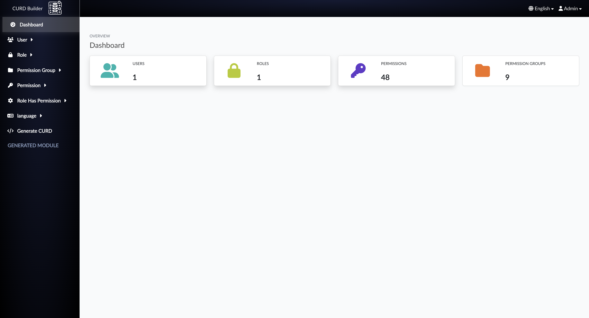
User Management
- In this section, you can manage user information including basic details such as name,
email, password, and role.
- All users can be listed with their corresponding details and roles. You can view, edit, or
delete users as needed.
User List
The list below shows all users along with their details:
You can also export the user list in various formats:
- Export to CSV: Download the user list as a CSV file for easy use in
spreadsheet applications.
- Export to Excel: Export the user list directly to an Excel file.
- Print: Print the user list directly from the platform for physical
records.
Create User Information
To create a new user, click on the Create User button in the user management
section. A form will appear where you can enter the following details for the new user:
- Name: Enter the user's full name.
- Email: Provide the user's email address, which will be used for login
and notifications.
- Password: Set a secure password for the user (you can generate one or
create a custom one).
- User Type: Choose the type of user—either an Admin with full access or
a regular User with restricted access.
- Role: Assign a specific role to the user, such as Super Admin, Editor,
or Viewer. This will define their permissions within the system.
Once all necessary details are filled in, click the Create User button to
save the new user's information and grant them access to the platform.
Role Management
- In this section, you can manage user roles within the platform.
- Roles define the permissions and access levels users have in the system.
Role List
The list below shows all the available roles within the platform:
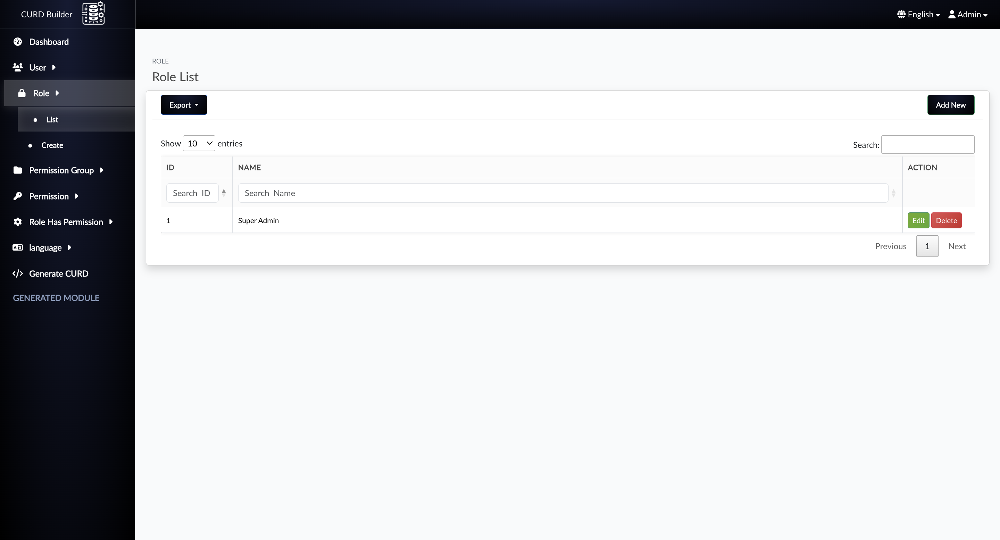
Create Role Information
To create a new role, click on the Create Role button in the role management
section. A form will appear where you can enter the following details for the new role:
- Role Name: Enter a unique name for the role, such as
Admin, Editor, or Viewer.
Once the role name is entered, click the Create Role button to save the new
role and assign it to users.
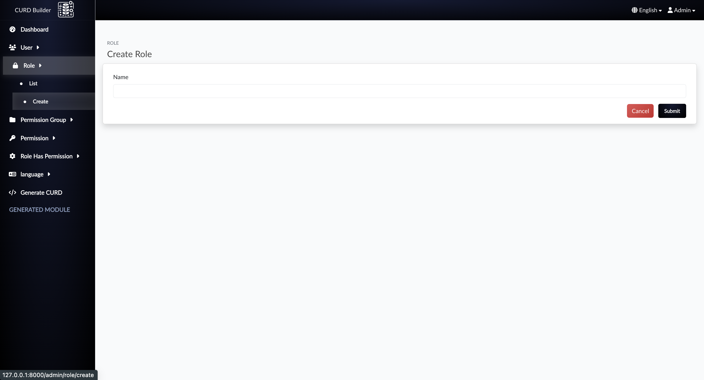
Permission Group Management
- In this section, you can manage permission groups within the platform.
- Permission groups are used to organize multiple permissions that can be assigned to users or
roles in the system.
Permission Group List
The list below shows all the available permission groups within the platform:
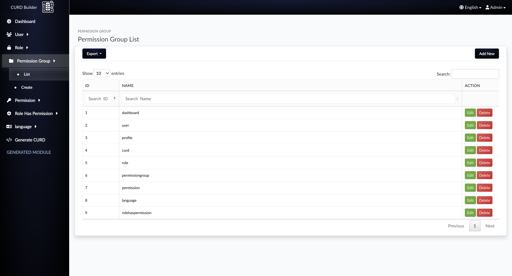
Create Permission Group Information
To create a new permission group, click on the Create Permission Group
button in the permission group management section. A form will appear where you can enter
the following details for the new permission group:
- Permission Group Name: Enter a unique name for the permission group,
such as
User Permissions, Role Permissions, or
Moduel wise Permissions.
- Permissions: Multiple permissions to associate with the permission
group. Each permission defines an action a user or role can perform, such as
Create, Read, Update, or Delete.
Once the permission group name and associated permissions, click the Create
Permission Group button to save the new permission group.
Permission Management
- In this section, you can manage permissions within the platform.
- Permissions define specific actions or access rights, such as
Create,
Read, Update, or Delete, that can be assigned to
users or roles through permission groups.
Permission List
The list below shows all the available permissions within the platform, along with the
associated permission groups:
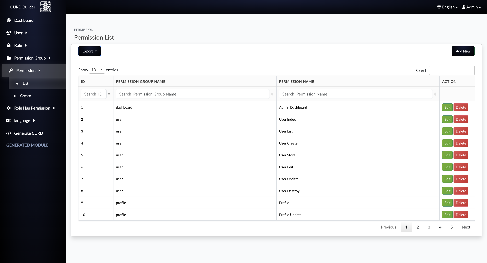
Create Permission Information
To create a new permission, click on the Create Permission button in the
permission management section. A form will appear where you can enter the following details
for the new permission:
- Permission Name: Enter a unique name for the permission, such as
View Dashboard, Edit Users, or Delete Orders.
- Permission Group: Select an existing permission group to associate with
this permission. For example, you might select a group like
Admin Permissions or Editor Permissions.
- Permissions: Check the specific permissions that should be associated
with this group, such as
Create, Read, Update, or
Delete.
Once the permission name, group, and associated actions are selected, click the
Create Permission button to save the new permission and associate it with
the chosen group.
Role Has Permission
- In this section, you can manage the association of permissions to roles.
- Roles can have multiple permissions, which determine the specific actions a role can perform
within the system.
Role List with Associated Permissions
The list below shows all roles along with the permissions they have been assigned:
Permissions Modal
When you click on a role, a modal will appear showing all permissions associated with that
role. The modal allows you to select individual permissions or select permissions by group:
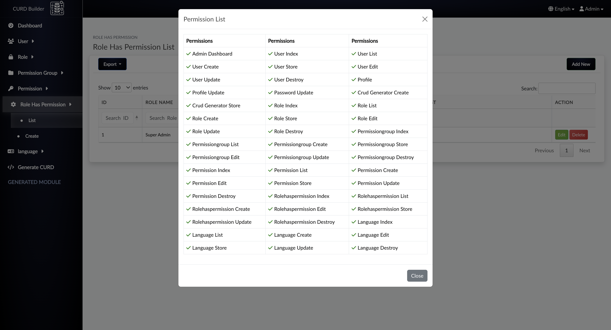
Create Role Has Permission
To create a role with permissions, click on the Create Role button. A form
will appear where you can select the role and associate permissions:
- Select the role you want to assign permissions to.
- A modal will appear with a list of all available permissions. You can check permissions
individually or select them by permission group.
- Once you've selected the desired permissions, click the Save Role
Permissions button to save the association.
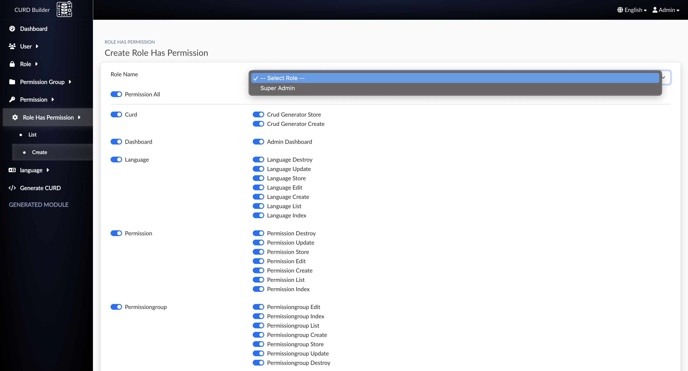
Language and Localization
- In this section, you can manage the language settings and localization data for the
platform.
- Each country can have its specific localization data, such as language, date formats, and
currency. If localization data is not provided, English will be used as the default.
Country List with Country Code
The list below shows all the available countries along with their respective country codes:
Create Country and Localization
To create a new country and its localization settings, click on the Create
Country button. A form will appear where you can input the following details:
- Country: Enter the name of the country, such as
United States, Franch, etc.
- Country Code: Input the country code (e.g.,
en,
fr).
- Localization Data: You can enter specific localization settings for the
country, such as language, date format, and currency. If no localization data is
provided, the system will default to English.
Once the country and localization data are entered, click the Create Country
button to save the new country and its localization settings. If you wish to edit the
country or localization data later, you can easily update it from the user management
section.
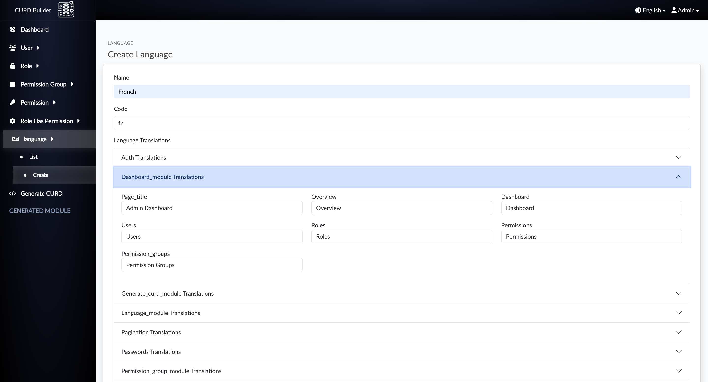
Change Language and Localization Data
After creating a user, you can change the language and localization data as needed:
- Automatic Localization: When a user inputs localization data (such as
language and country code), the system will automatically switch to the localized data.
If no data is provided, it will default to English.
- Manual Changes: You can manually update the localization data for any
user after creation, allowing the user to change language settings or country code at
any time.
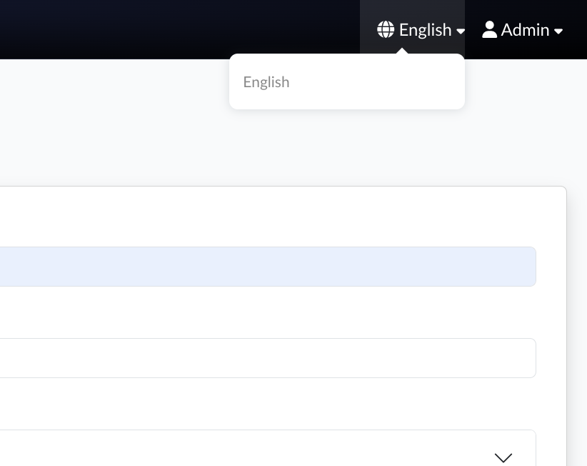
CRUD Module Documentation - Create Action
In this section, we will describe the Create action of the CRUD (Create, Read, Update, Delete)
module. The Create functionality allows you to add new records to the system. Below are the key
components involved in setting up the Create functionality with screenshots of each part.
1. Model Configuration
The Model defines the structure and logic for interacting with a specific database table. For
the
Create functionality, the model ensures that the necessary fields are properly filled when
adding new records.
- Description: The model configuration includes specifying which fields
can
be mass-assigned (fillable) and defining any relationships between models and soft
Deletes.
2. Migration Configuration
The Migration is a blueprint for creating the database table that will store the records. For
the
Create action, migrations define the table structure, including the fields that need to be
captured when adding a new record.
- Description: The migration file is responsible for creating the
necessary
database columns, such as name, email, and created_at. Each migration file corresponds
to a
version of the database schema.
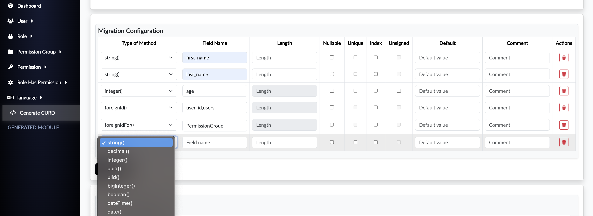
3. Model Relationship
Model relationships define how models are connected to each other. When creating a new
record,
some fields may reference other tables (for example, foreign keys), and these relationships
should be specified in the model.
- Description: Relationships like belongsTo, hasMany, or hasOne help to
link
models together, especially when foreign keys are involved. For example, a Post model
might
have a belongsTo relationship with a Category model.
4. View Configuration
The View is the front-end interface where users can input data. It contains the HTML form
that
allows users to create new records. This view is rendered when the "Create" button is
clicked.
- Description: The view configuration includes form fields for data
entry.
This is where the user interacts with the system to input details such as name, email,
and
any other required fields.
5. API Field Configuration (Validation)
The API allows external applications to interact with the system. The API field validation
ensures that the incoming data in the POST request is valid before it is processed and saved
to
the database.
- Description: When users send POST requests to the API to create a new
record, the fields they provide must be validated and processed. The API field
configuration
ensures the correct fields are included and validated.
6. Model Selection for Foreign ID Selection
In some cases, a record needs to reference another record via a foreign key. Foreign ID
selection
allows you to choose the related model for fields like user_id, category_id, etc.
- Description: When creating a new record, the foreign key fields must be
populated with the correct related model data. The system uses dropdowns or search
fields to
select related entities.
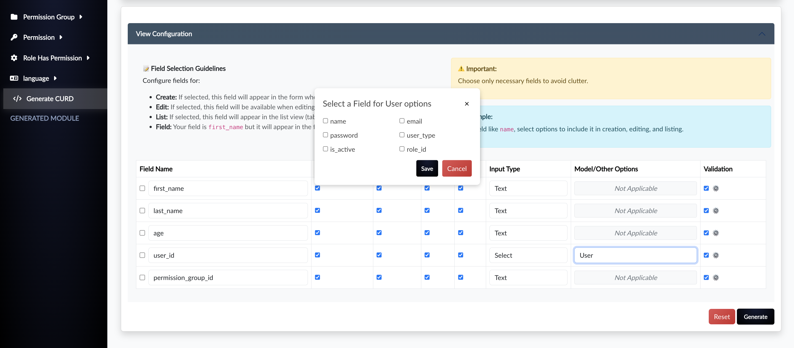
7. Validation Configuration
Validation ensures that the data entered by the user is correct before the new record is
saved to
the database. This step is critical for data integrity and user experience.
- Description: Validation rules are applied to the form fields to ensure
they
meet the required format (e.g., email format, required fields, etc.). This step prevents
invalid data from being entered into the system.
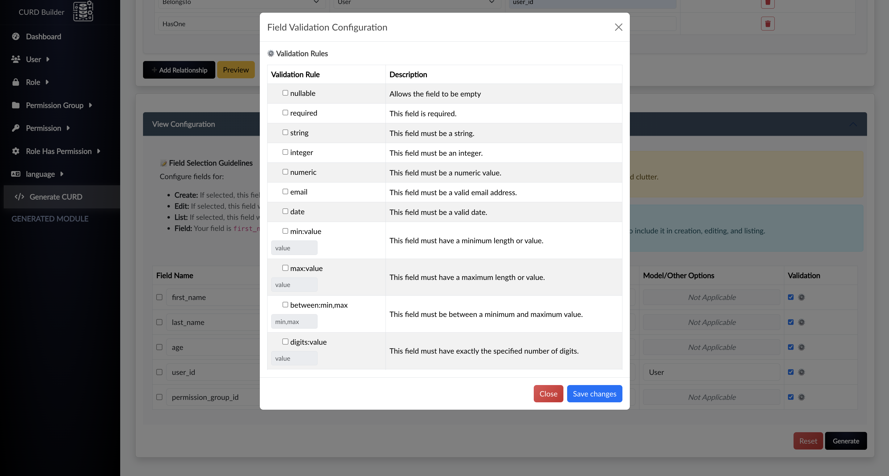
API User Authentication
- This section outlines the key API endpoints used for user authentication and account management:
- User Registration:
- Allows new users to register an account.
POST /api/register- Required fields:
name (string)email (string, unique)password (string)password_confirmation (string)
- User Login:
- Authenticates the user and returns a JWT token for further API access.
POST /api/login- Required fields:
email (string)password (string)
- Response includes:
access_token: Token for authenticated API requests.token_type: Typically "Bearer".expires_in: Token expiration time.
- Forgot Password:
- Generates a reset token and sends it to the user's email.
POST /api/password/forgot- Required field:
- Reset Password:
- Resets the user's password using the provided token.
POST /api/password/reset- Required fields:
token (string, sent via email)email (string)password (string)password_confirmation (string)
- Logout:
- Logs out the user and invalidates the token.
POST /api/logout- Header:
Authorization: Bearer {token}
- Swagger Documentation:
- All API endpoints are automatically documented using Swagger.
- Visit
/api/documentation to view the interactive Swagger UI.
- Swagger provides real-time testing and detailed information about request parameters, responses, and authentication methods.
Thank You
Again, thank you for purchasing RockNovaLabs. If you need any help or support, please use email
or
contact form via Codecanyon Profile site
Hope you are happy with RockNovaLabs, all the best with your business.
Release Log
Version 1.0 (29th December 2024)
©
RockNovaLabs